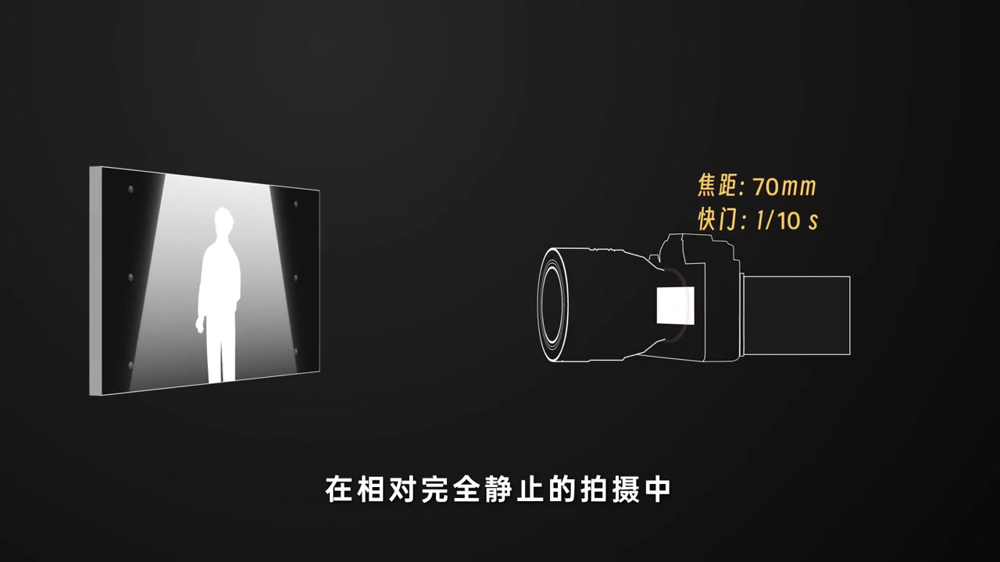
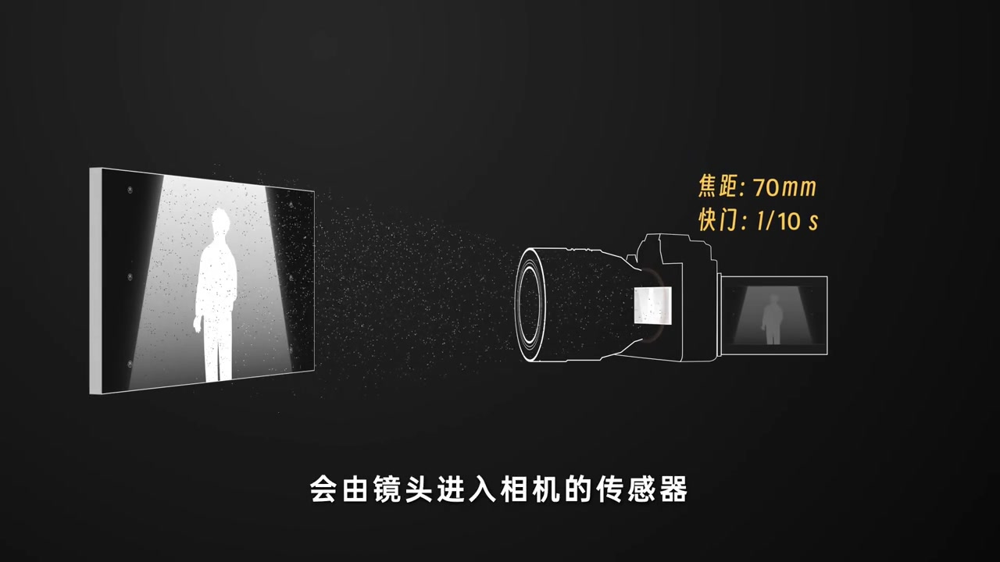
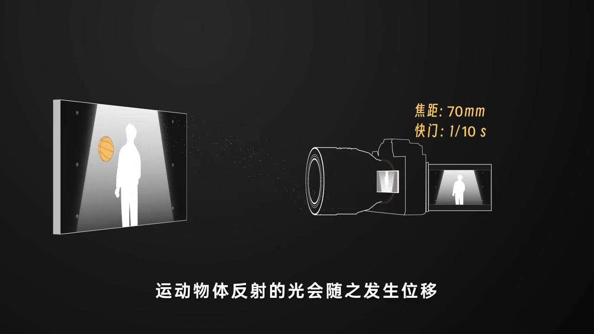
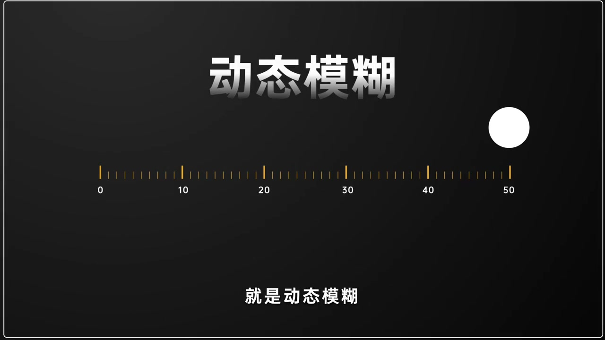
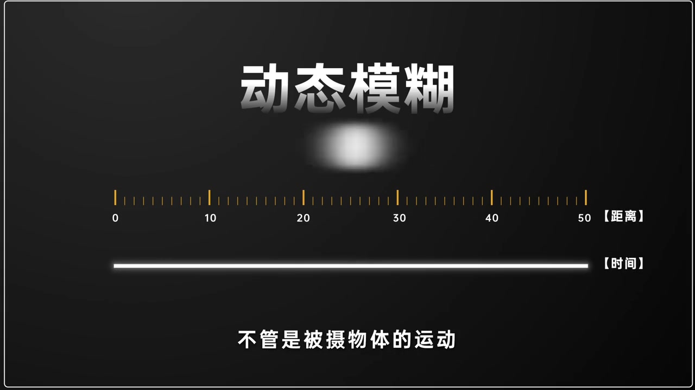
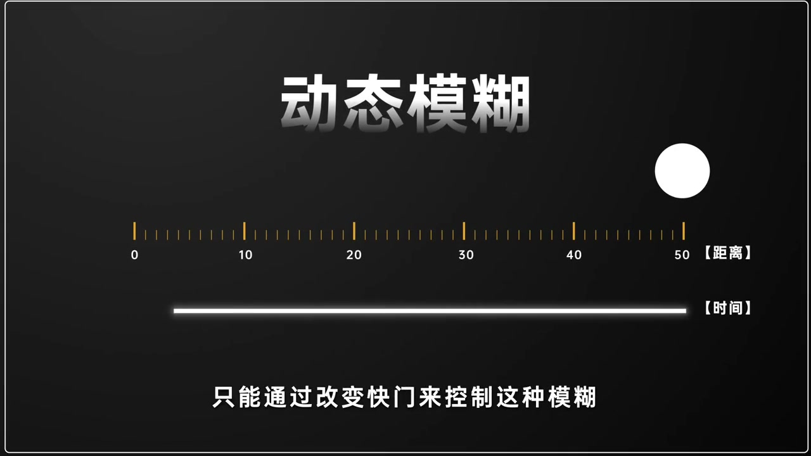
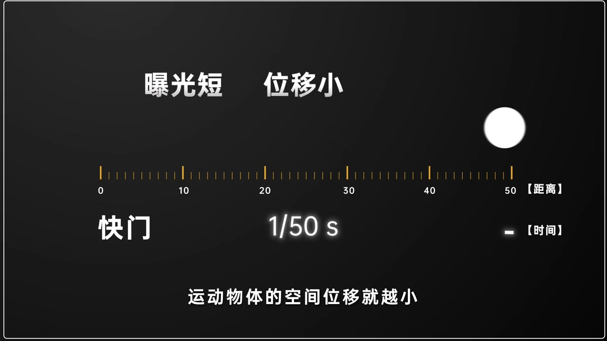
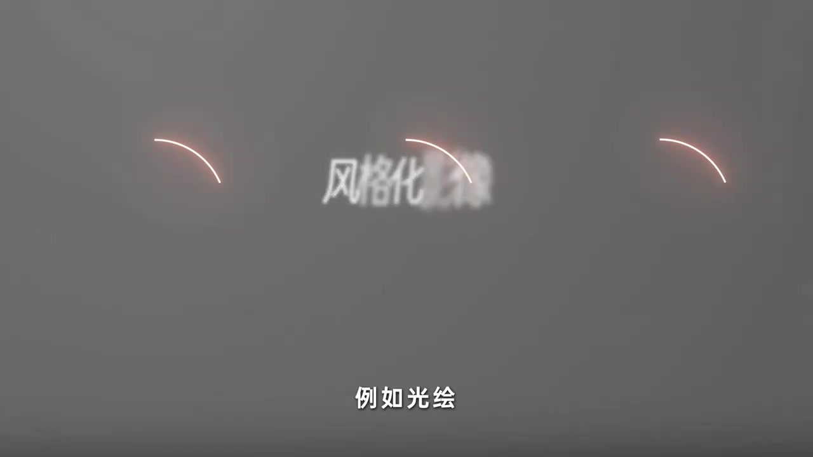

开场：相对完全静止时，光线落在固定位置
画面先摆出一帧示意：左侧是站在光柱里的人影剪影，右侧是一台标注「焦距 70mm / 快门 1/10 s」的相机。旁白说，在相对完全静止的拍摄中，按下快门后，场景里所有物体反射的光线会经镜头进入传感器，并在固定位置累积——于是得到一张清晰画面。
画面字幕大意：在相对完全静止的拍摄中……会由镜头进入相机的传感器……这样就能得到一张清晰的画面。
说明：Whisper 把「快门」识成「关门 / 宽门」，「位移」识成「胃移」，「被摄」识成「背摄」，「恒定」识成「横定」，「多数」识成「多时」。下文叙述以画面字幕与动画为准；末尾仍完整保留全部 Whisper 分段。


一旦有运动：反射光随之发生位移
动画里多出一颗篮球——空间里出现运动后，运动物体反射的光会跟着发生位移，传感器上累积到的就不再是「钉死」的轮廓，而是带运动轨迹的模糊画面。
画面字幕：「运动物体反射的光会随之发生位移」

这种由相对运动位移产生的模糊，就是动态模糊
大标题「动态模糊」压上屏幕，旁白把前面的现象收成一个术语：由相对运动位移产生的模糊，就是动态模糊。
旁白大意：这种由相对运动位移产生的模糊，就是动态模糊。

影响最大的两个因素：曝光时长与相对运动
画面用「距离」刻度与「时间」时间条对照说明：动态模糊主要受曝光时长和相对运动影响。相对运动既可以来自被摄物体，也可以来自相机本身的抖动。
旁白大意：影响动态模糊最大的两个因素，一个是曝光时长，一个是相对运动……不管是被摄物体的运动，或是相机本身的抖动。

大部分拍摄很难改物体运动，只能改快门
旁白很务实：多数情况下我们改不了被摄物体怎么动，于是控制这种模糊的抓手，落到改变快门（曝光时长）上。
画面字幕：「只能通过改变快门来控制这种模糊」

运动恒定时：曝光越短越清晰，越长越糊
在运动大致恒定的前提下，视频给出正反对照：曝光时间越短，运动物体在空间里的位移越小，画面越清晰；反之曝光越长，位移越大，图像也就更模糊。示意快门从 1/50 s 一类较短曝光切入对照。
画面字幕：「曝光短 位移小」「运动物体的空间位移就越小」

动态模糊不是缺陷；平面摄影多数仍选择规避
语气一转：动态模糊并不是成像缺陷，很多人会利用这个特性做有意思的内容，比如光绘。当然，在平面摄影里，多数情况还是会规避这种模糊，以拿到一张清晰图像。
画面字幕：「例如光绘」「风格化影像」

整段视频从「为什么会糊」走到「糊能不能用」：先讲清物理机制，再把快门当成控制旋钮，最后提醒用途取决于拍摄目标。